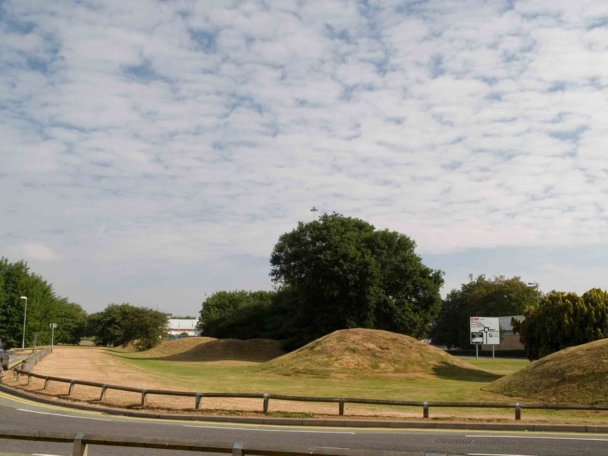

<DOCTYPE HTML PUBLIC "-//W3C//DTD XHTML 1.0 Strict//EN"
"http://www.w3.org/TR/xhtml1/DTD/xhtml1-strict.dtd">

<html xmlns="http://www.w3.org/1999/xhtml">

<head>
	<meta http-equiv="Content-Type"	content="text/html; charset=iso-8859-1" />
	<meta http-equiv="expires"		content="0" />

	<meta name="author"			content="Mark Cranny" />
	<meta name="date"				content="01-Apr-2006" />
	<meta name="generator"			content="Homesite" />
	<meta name="description"		content="An affectionate look at Stevenage" />
	<meta name="keywords"			content="Stevenage XHTML" />
	<meta id="revised"			content="Mark Cranny,07-APR-2006 10:31:02" />

	<link rel="stylesheet" type="text/css" href="../css/default.css">

</head>

<body>

<h2 style="margin-left: 80">The Six Hills</h2>

<p style="text-align: center">
	
</p>

</body>

</html>
